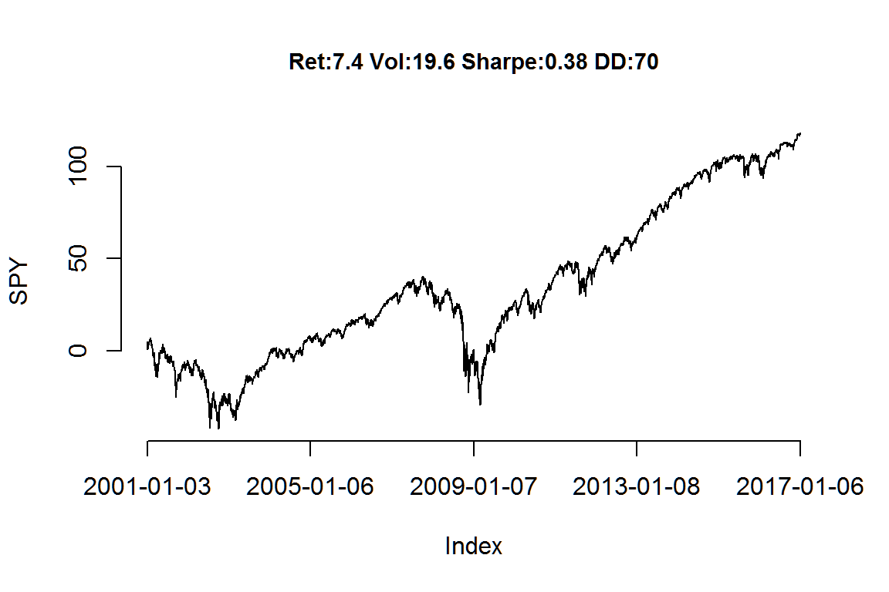
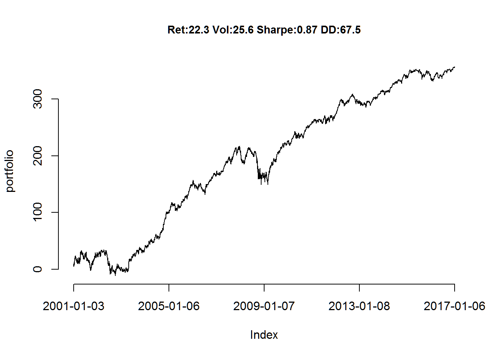
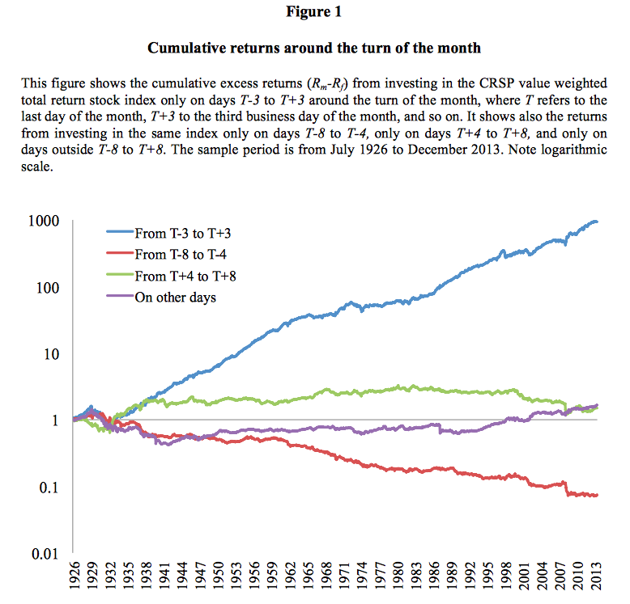

title: “Exercise Set 1” author: “T. Evgeniou” output: html_document —
The purpose of this exercise is to become familiar with:
While doing this exercise we will also see how to generate replicable and customizable reports. For this purpose the exercise uses the R Markdown capabilities (see Markdown Cheat Sheet or a basic introduction to R Markdown). These capabilities allow us to create dynamic reports. For example today’s date is 2017-01-10 (you need to see the .Rmd to understand that this is not a static typed-in date but it changes every time you compile the .Rmd - if the date changed of course).
Before starting, make sure you have pulled the exercise files on your github repository (if you pull the course github repository you also get the exercise set files automatically). Moreover, make sure you are in the directory of this exercise. Directory paths may be complicated, and sometimes a frustrating source of problems, so it is recommended that you use these R commands to find out your current working directory and, if needed, set it where you have the main files for the specific exercise/project (there are other ways, but for now just be aware of this path issue). For example, assuming we are now in the “MYDIRECTORY/INSEADAnalytics” directory, we can do these:
getwd()
setwd("Exercises/Exerciseset1/")
list.files()Note: you can always use the help command in Rstudio to find out about any R function (e.g. type help(list.files) to learn what the R function list.files does).
Let’s now see the exercise.
IMPORTANT: You should answer all questions by simply adding your code/answers in this document through editing the file ExerciseSet1.Rmd and then clicking on the “Knit HTML” button in RStudio. Once done, please post your .Rmd and html files in your github repository.
We download daily prices (open, high, low, close, and adjusted close) and volume data of publicly traded companies and markets from the web (e.g. Yahoo! or Google, etc). This is done by sourcing the file data.R as well as some helper functions in herpersSet1.R which also installs a number of R libraries (hence the first time you run this code you will see a lot of red color text indicating the download and installation process):
source("helpersSet1.R")
source("dataSet1.R")[1] “ticker SPY …” [1] “ticker AAPL …”
For more information on downloading finance data from the internet as well as on finance related R tools see these starting points (there is a lot more of course available):
getSymbols(“QQQ”)
The data set is returned to the R session in the form of an xts object with the name QQQ. To check the contents, the head(.) and tail(.) R functions are useful. Website:http://blog.revolutionanalytics.com/2013/12/quantitative-finance-applications-in-r.html **
We have 4028 days of data, starting from 2001-01-03 until 2017-01-06. Here are some basic statistics about the S&P returns:
Here are returns of the S&P in this period (note the use of the helper function pnl_plot - defined in file helpersSet1.R):

Your Answers here: 1. We call out Apple as one of the data to pull when we define the variable mytickers in dataSet1.R Row 8 and we specificy AAPL 2. For Apple: Cummulative returns is 595.5%, Avg daily returns is 0.148% and Standard Deviation is 2.39% 3. Yes, we can by adding Yahoo ticker Yahoo! in the vector of mytickers variable. mytickers will therefore be c(“SPY”, “AAPL”, “YHOO”)
For this part of the exercise we will do some basic manipulations of the data. First note that the data are in a so-called matrix format. If you run these commands in RStudio (use help to find out what they do) you will see how matrices work:
class(StockReturns)
dim(StockReturns)
nrow(StockReturns)
ncol(StockReturns)
StockReturns[1:4,]
head(StockReturns,5)
tail(StockReturns,5) We will now use an R function for matrices that is extremely useful for analyzing data. It is called apply. Check it out using help in R.
For example, we can now quickly estimate the average returns of S&P and Apple (of course this can be done manually, too, but what if we had 500 stocks - e.g. a matrix with 500 columns?) and plot the returns of that 50-50 on S&P and Apple portfolio:

We can also transpose the matrix of returns to create a new “horizontal” matrix. Let’s call this matrix (variable name) transposedData. We can do so using this command: transposedData = t(StockReturns).
help(apply)), can you create again the portfolio of S&P and Apple and plot the returns in a new figure below?Your Answers here: 1. Number of Row nrow(transposeData). Number of Columns ncol(transposeData) 2. portfolio1 = apply(transposedData,2,mean) names(portfolio1)<-colnames(transposedData) pnl_plot(portfolio1)
This is an important step and will get you to think about the overall process once again.
Your Answers here: 1. In line 9 of DataSet1.R, change start date to 2000-12-30
Finally, one can read and write data in .CSV files. For example, we can save the first 20 days of data for S&P and Apple in a file using the command:
write.csv(StockReturns[1:20,c("SPY","AAPL")], file = "twentydays.csv", row.names = TRUE, col.names = TRUE) Do not get surpsised if you see the csv file in your directories suddenly! You can then read the data from the csv file using the read.csv command. For example, this will load the data from the csv file and save it in a new variable that now is called “myData”:
myData <- read.csv(file = "twentydays.csv", header = TRUE, sep=";")Try it!
sum(myData != StockReturns[1:20,])myData + StockReturns[1:40,])Your Answers here: 1. Firstly, the command to run myData should indicate that the data in CSV file has to be separated by , not ; When that is done, executing the summation funcation will lead to a number of 60. This is because myData is a 203 matrix while 1st 20 rows of StockReturns is a 202 matrix and data in the corresponding coordinates of these matrixs are not identical. Therefore when the operator notequalsto is applied, it return as TRUE (value=1) for all cells. 2.It results in an Error message because the first column of myData representing the date is a character argument that is commanded to be added to a numeric argument. To do a proper summation, the 2nd and 3rd column of myData need to be selected ( myData[,2:3])
Can you now load another dataset from some CSV file and report some basic statistics about that data?
Finally, just for fun, one can add some interactivity in the report using Shiny.All one needs to do is set the eval flag of the code chunk below (see the .Rmd file) to “TRUE”, add the line “runtime: shiny” at the very begining of the .Rmd file, make the markdown output to be “html_document”, and then press “Run Document”.
sliderInput("startdate", "Starting Date:", min = 1, max = length(portfolio),
value = 1)sliderInput("enddate", "End Date:", min = 1, max = length(portfolio),
value = length(portfolio))renderPlot({
pnl_plot(portfolio[input$startdate:input$enddate])
})This is a recent research article that won an award in 2016. Can you implement a simple strategy as in Figure 1 of this paper? You may find these R commands useful: names, which, str_sub,diff,as.vector, length, pmin, pmax, sapply, lapply,Reduce,unique, as.numeric, %in% 
What if you also include information about bonds? (e.g. download the returns of the the ETF with ticker “TLT”) Is there any relation between stocks and bonds?
Have fun